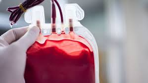
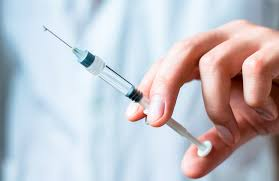

Mode of HIV Transmission
HIV is transmitted through specific body fluids that contain the virus. Understanding the modes of transmission can help prevent the spread of HIV.
Below are the main ways HIV can be transmitted:

Blood Transfusion
HIV can be transmitted through contaminated blood or blood products, especially in unregulated medical settings.
Unprotected Sexual Contact
HIV is transmitted through sexual fluids during unprotected vaginal, anal, or oral sex with an infected person.
Mother to Child
A pregnant mother with HIV can transmit the virus to her child during pregnancy, childbirth, or breastfeeding.

Sharing Needles
Injecting drugs with contaminated needles is another method of transmission, as blood can be shared during injection.